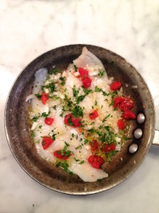
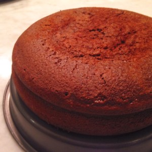
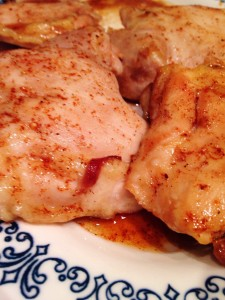
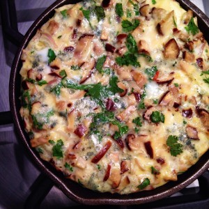

Beet Hummus
July 1, 2017

Beets are used in traditional cuisines everywhere from Eastern Europe to India. The roots are colorful, rich, sweet and packed with nutrients. This recipe uses the hearty red root to make a creamy hummus...
Simple Sautéed Flounder
June 22, 2017
Based on the mediterranean culinary tradition, this flounder entree combines healthy fats, fish, lemons and fresh produce. A diet-friendly dish, this will leave you feeling...
Spicy-Sweet Chocolate Cake
June 9, 2017
Want to spice up dessert? Try my Mexican hot chocolate inspired Spicy-sweet Chocolate Cake. Rich dark chocolate combined with savory and spicy components gives this dessert a big, bold flavor. Salt is...
Spicy Honey-Coated Chicken Thighs
June 1, 2017
This chicken dish indulges my love of the savory-sweet combination. Add your desired amount of cayenne pepper to the honey to create a lush glaze for the tender chicken thighs. Using beer keeps...
Mushroom and Blue Cheese Frittata
May 2, 2017
Frittatas are a fantastic all purpose dish that should be a staple in every household. Italian in origin, frittatas are often categorized as crustless quiches or thick skillet omelettes and consistent...